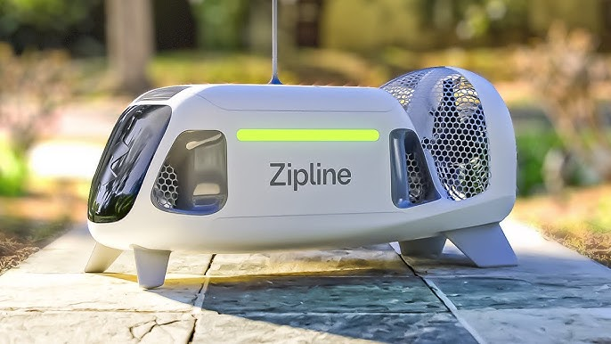

Smartphones
Smartphones continue to evolve at a rapid pace, with major brands releasing new models featuring cutting-edge technology. From foldable screens to advanced AI capabilities, the smartphone market is more dynamic than ever.
Wearables
Wearable technology has expanded beyond just fitness trackers. Today’s wearables include smartwatches, health monitors, and even smart clothing, all designed to help you stay connected and healthy.

Smart Home
Smart home devices are making our lives more convenient and secure. From smart speakers and lighting to advanced security systems, the integration of IoT in homes is transforming the way we live.
Future Tech
The future of technology holds exciting possibilities with advancements in AI, robotics, and quantum computing. These technologies promise to revolutionize industries and create new opportunities for innovation.
